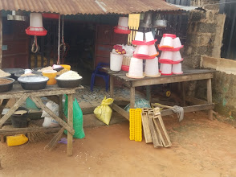
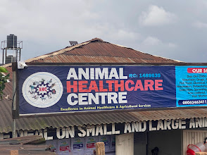

Poultry Tips
Tips For Healthy Poultry And Higher Profits
Start with clean housing, quality chicks, correct feed, clean water and a practical vaccination routine.
Ask for advicePoultry tips, animal health guidance, farm management, livestock education and agribusiness insights.
Start with clean housing, quality chicks, correct feed, clean water and a practical vaccination routine.
Ask for advice
Poor spacing, wrong feed changes, weak hygiene and late treatment can reduce growth and increase losses.
Get guidance
Layer success depends on brooding, balanced feeding, light control, calcium support and disease prevention.
Ask about layers
Observe animals daily, isolate sick stock early, keep records and use products only with proper guidance.
Chat with us
Control visitors, clean equipment, separate age groups and protect feed from contamination.
Learn more
Match products to your animal type, growth stage, health condition and business goal before buying.
Browse shop